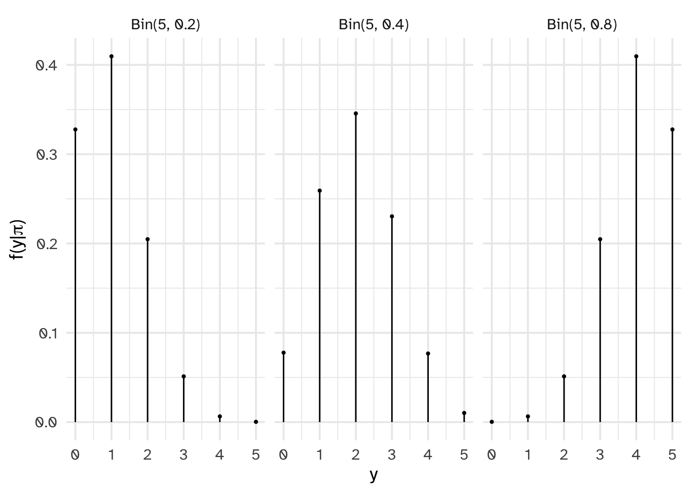
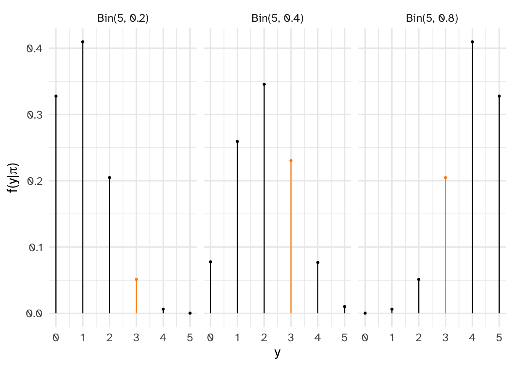
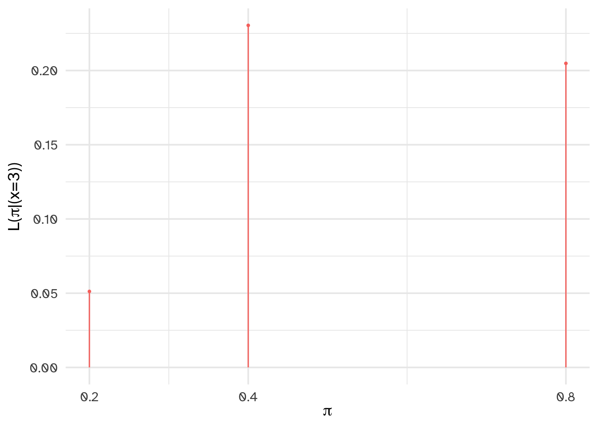

[1] 0.0512Day 02
Carleton College
Stat 340 - Fall 2025
The following are some survey results from a recent Pew Research report to the question “About how often to use the internet”?
| Almost constantly | Several Times a day | About once a day | Several times a week | Less often | Do not use | |
|---|---|---|---|---|---|---|
| US | 2059 | 2159 | 301 | 150 | 100 | 201 |
| Canada | 328 | 553 | 61 | 31 | 10 | 41 |
Calculate the following probabilities and write them using event notation. Let \(A\): online almost constantly and \(B\): lives in US
| Almost constantly | Several Times a day | About once a day | Several times a week | Less often | Do not use | |
|---|---|---|---|---|---|---|
| US | 2059 | 2159 | 301 | 150 | 100 | 201 |
| Canada | 328 | 553 | 61 | 31 | 10 | 41 |
Marginal Probability
| Almost constantly | Several Times a day | About once a day | Several times a week | Less often | Do not use | |
|---|---|---|---|---|---|---|
| US | 2059 | 2159 | 301 | 150 | 100 | 201 |
| Canada | 328 | 553 | 61 | 31 | 10 | 41 |
Joint Probability
| Almost constantly | Several Times a day | About once a day | Several times a week | Less often | Do not use | |
|---|---|---|---|---|---|---|
| US | 2059 | 2159 | 301 | 150 | 100 | 201 |
| Canada | 328 | 553 | 61 | 31 | 10 | 41 |
Conditional Probability
\(P(A|B) \ne P(B|A)\)
Complement rule
\(P(A^c) = 1 - P(A)\)
Bayes Rule for Events
I’m trying to determine whether a student response to a homework question is AI generated. I know that AI use among college students in general is high, but my prior is that Carleton students are pretty honest. I would guess only around 2% of submitted answers are AI generated.
LLMs are obsessed with em dashes:
Imagine you have an idea or belief about something–like whether it’s going to rain today. Then, you get some new information–like seeing dark clouds in the sky. Bayes’ Rule helps you recalculate how confident you should be in your belief after seeing that new information. Let me know if you want a real-world example (like medical tests or crime investigations)—those make it even clearer.
–ChatGPT. Prompt: “Can you summarize Bayes Rule without any math?”
This suggests a possible rule for determining if an answer is AI generated. I gather some data:
I notice that 78% of AI generated responses use an em-dash, but only 5% of student responses used an em-dash.
In probability notation:
Which of the following best describes your posterior “gut check” of whether the answer was AI generated?
Let A:
Let B:
Looking at the conditional probabilities:
P(A|B) =
P(A|B^c) =
\[L(\cdot | A) = \begin{cases} L(B|A) = P(A|B) \\ L(B^c|A) = P(A | B^c) \end{cases}\]
When \(B\) is known, the conditional probability function \(P(\cdot | B)\) allows us to compare the probabilities of an unknown event, \(A\) or \(A^c\), occurring with \(B\)
When \(A\) is known, the likelihood function \(L(\cdot | A) = P(A | \cdot)\) allows us to evaluate the relative compatibility with data \(A\) with events \(B\) or \(B^c\)
\[P(B|A) = \frac{P(B) L(B|A)}{P(A|B)P(B) + P(A|B^c)P(B^c)}\] \[P(B|A) = \frac{.02 \times .78}{.02\times .78 + .98 \times .05}\] \[P(B|A) = \]
| \(B\) | \(B^c\) | Total | |
|---|---|---|---|
| Prior | |||
| Likelihood | |||
| Posterior |
Idea: what if the values we’re interested in can’t be simplified into binary events
Let Y represent a random variable that represents the number of applicants admitted to a PhD program which has received applications from 5 prospective students. That is \(\Omega_Y = \{0, 1, 2, 3, 4, 5\}\). We are interested in the parameter \(\pi\) which represents the probability of acceptance to this program. For demonstrative purposes, we will only consider three possible values of \(\pi\) as 0.2, 0.4, and 0.8.
You consult with an expert who knows the specific PhD program well and the following is the prior distribution the expert suggests you use in your analysis.
| \(\pi\) | 0.2 | 0.4 | 0.8 |
|---|---|---|---|
| \(f(\pi)\) | .7 | .2 | .1 |
Explain what this prior distribution means
For the two scenarios below, use your intuition to “guesstimate” the posterior (fill out each row based on ~vibes~ )
| \(\pi\) | 0.2 | 0.4 | 0.8 |
|---|---|---|---|
| \(f(\pi)\) | |||
| \(f(\pi | y = 5)\) (1) | |||
| \(f(\pi | y = 0)\) (2) |
Your intuition may not be Bayesian if:
Bayesian statistics is a balancing act! We will take both the prior and the data to get to the posterior. Don’t worry if your intuition was wrong. As we practice more, you will learn to think like a Bayesian.
Let random variable \(Y\) be the number of successes in n trials. Assume that the number of trials is fixed, the trials are independent and the probability of success in each trial is \(\pi\). Then, the dependence of \(Y\) on \(\pi\) can be modeled by the Binomial model with parameters \(n\) and \(\pi\):
conditional pmf:
\[f(y | \pi) = {n \choose y} \pi^y (1-\pi)^{n-y} \text{ for } y \in \{0, 1, 2, ..., n\}\]
if \(\pi = .2\) and \(y = 3\):
(or we can use R)
Rather than doing this one by one, we can let R consider all different possible values of \(y\):
| \(y\) | 0 | 1 | 2 | 3 | 4 | 5 |
|---|---|---|---|---|---|---|
| \(f(y | \pi = .2)\) |

The admissions committee has anno¨nced they have accepted 3/5 applicants


| π | 0.2 | 0.4 | 0.8 |
|---|---|---|---|
| L(π | y = 3) | 0.0512 | 0.2304 | 0.2048 |
The likelihood function \(L(\pi|y=3)\) is the same as the conditional probability mass function \(f(y|pi)\) at the observed value \(y = 3\).
When \(\pi\) is known, the conditional pmf \(f(\cdot | \pi)\) allows us to compare the probabilities of different possible values of data \(Y\) (eg: \(y_1\) or \(y_2\)) occurring with \(\pi\):
\[f(y_1|\pi) \; \text{ vs } \; f(y_2|\pi) \; .\]
When \(Y=y\) is known, the likelihood function \(L(\cdot | y) = f(y | \cdot)\) allows us to compare the relative likelihoods of different possible values of \(\pi\) (eg: \(\pi_1\) or \(\pi_2\)) given that we observed data \(y\):
\[L(\pi_1|y) \; \text{ vs } \; L(\pi_2|y) \; .\]
\(\text{posterior} = \frac{\text{prior} \times \text{likelihood}}{\text{marginal probability of data}}\)
Therefore \(f(y=3)=\)
| π | 0.2 | 0.4 | 0.8 |
|---|---|---|---|
| f(π) | 0.7 | 0.2 | 0.1 |
| L(π | y = 3) | 0.0512 | 0.2304 | 0.2048 |
| f(π | y = 3) |
(In LaTeX: \propto)
Three steps to a Bayesian analysis: